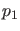
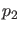
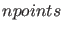
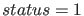
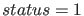

Solver output properties
The solver output properties allow one to control the output that the solvers generate.
MATCONT detects whether extra output is needed by looking at the number of open
output windows (2D, 3D or numeric). If extra output is required, MATCONT
sets the OutputFcn property to the output function, integplot which is passed
to an ODE solver by options = odeset('OutputFcn', @integplot), otherwise it is
set to the function integ_prs. The output function must be of the form
status = integplot(t, y, flag, , ,...).
The solver calls this function after every successful integration step with the
following flags. Note that the syntax of the call differs with the flag. The function
must respond appropriately:
- init: The solver calls integplot(tspan,y0,'init') before beginning
the integration, to allow the output function to initialize. This part initializes the output windows and
does some initializations to speed up the further processing of the output. It also
launches the window that makes it possible to interactively "stop/pause/resume" the
computations.
- within MATCONT it is possible to define the number of
points () after which output is needed. Because the solver calls
status = integplot (t,y)
after each integration step, the number of calls to
integplot and does not correspond. Therefore this part is divided
into two parts. t contains points where output was generated during the step,
and y is the numerical solution at the points in t. If t is a vector,
the
 -th column of y corresponds to the -th element of t. The output
is produced according to the Refine option.
integplot must return a status output value of
-th column of y corresponds to the -th element of t. The output
is produced according to the Refine option.
integplot must return a status output value of  or
or  . If ,
the solver halts integration. This part also handles the "stop/pause/resume" interactions.
. If ,
the solver halts integration. This part also handles the "stop/pause/resume" interactions.
- done: The solver calls integplot([],[],'done') when integration
is completed to allow the output function to perform any cleanup chores. The stop-window
is also deleted.
Setting the OutputFcn property to the output function, integ_prs, reduces the output time. It only allows to interactively pause,
resume and stop the integration.